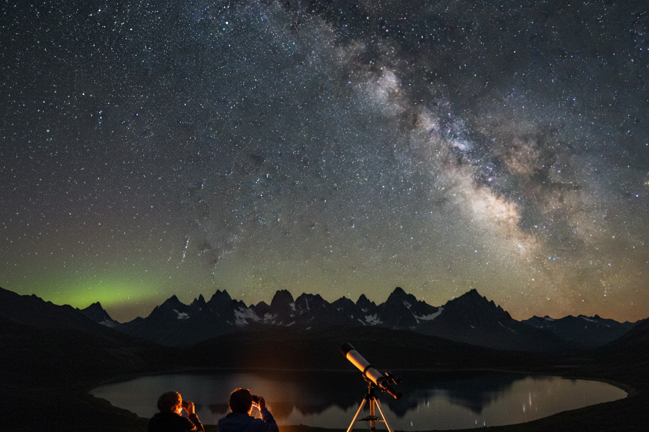
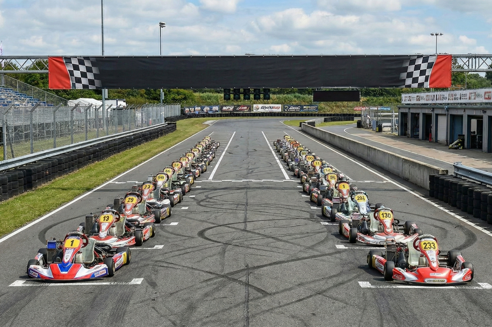

Events
There is quite a bit that you can possibly do while at our place. There's loads of local events around the area that you can attend!
Although, they may not be free, we often list em' right below so that you can take a glance and posibly decide what you may want to do while staying in our sweet place.
You can also refer to our events calender (only avalible on desktop) to see if any events match up with your stay!
| Sunday | Monday | Tuesday | Wednesday | Thursday | Friday | Saturday |
|---|---|---|---|---|---|---|

Join The Local Stargazing Group!
Most nights from Monday to Saturday, our local stargazing group is out an dabout at night watching the stars. Some are scientists, others just do it for the passion, and you could be a part of them! No, you don't have to sign up for anything! All you have to do is go to their meet up spot which is usually by the nearby park. You can also check their socials for more info.
Karaoke at The Local Bar
Feeling like a singer? Our local bar has Karaoke nights on Mondays and Fridays if you ever want to stop by and sing your heart out to a very welcoming audience. If singing is not your thing, then feel free to just pass by and watch those singers! No singing required!

Go-Kart Racing
Ever wanted to burn loads of rubber, without getting pulled over for it? Well, in our town, you absolutly can! With our brand new local race track! About almost everyday, there is a go-kart club that lets regular people, such as you, to race the track on Go-Karts. They also have professional races from time to time that you may be able to see if you ever get so lucky.